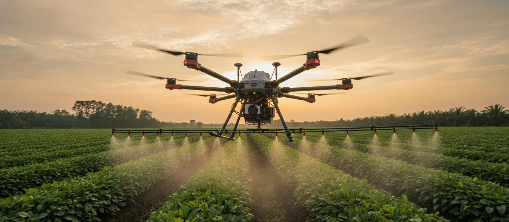
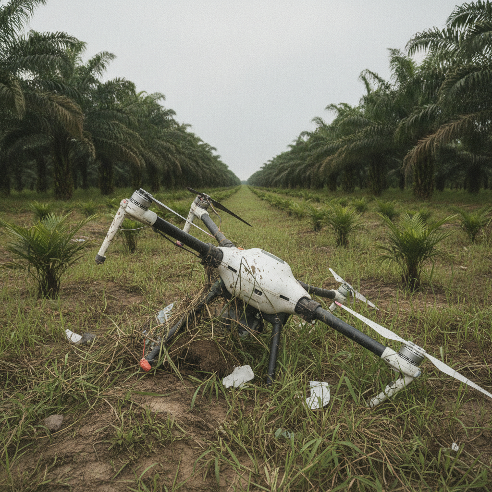
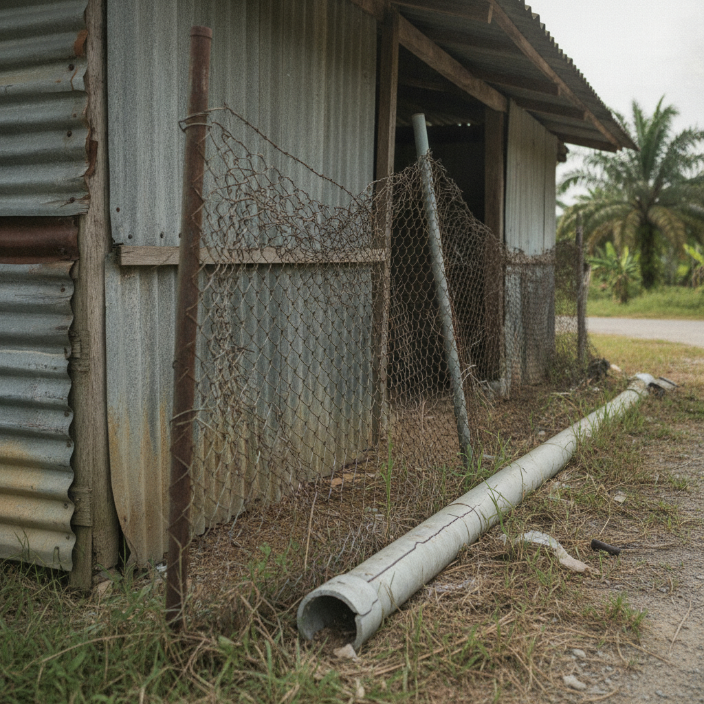
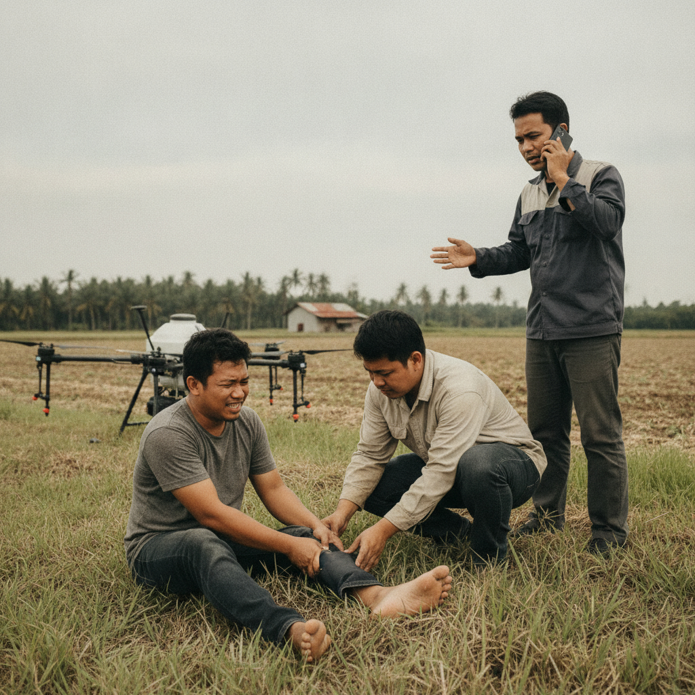
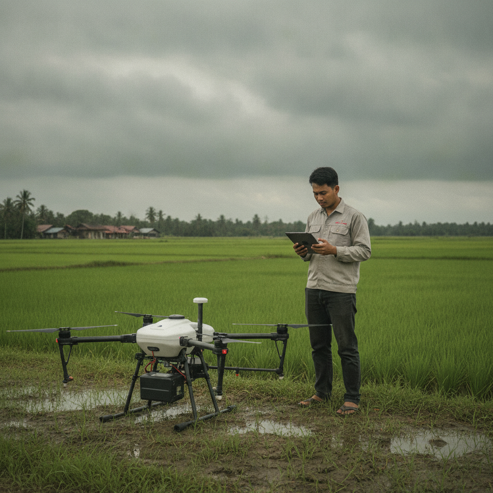
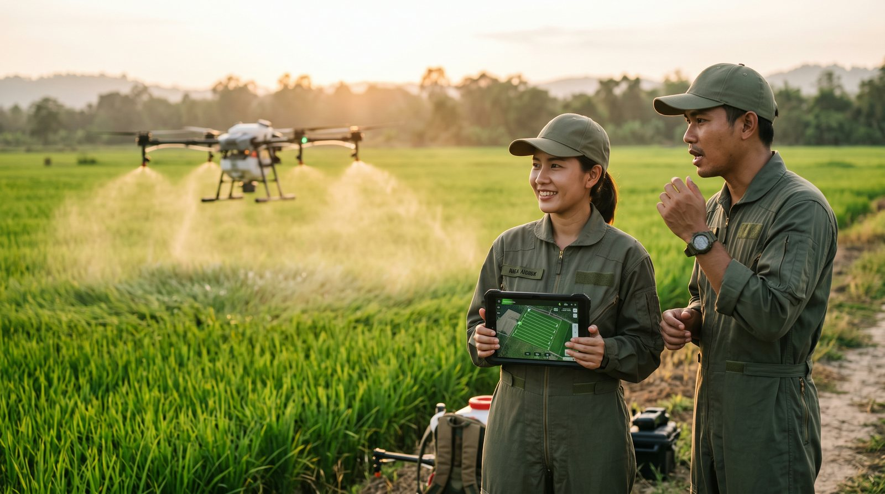
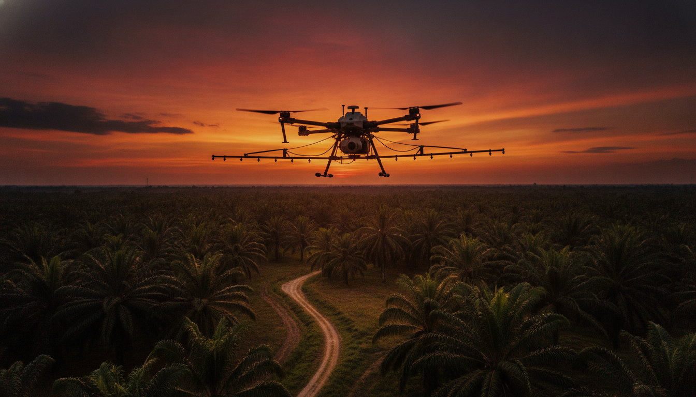

The First Line of Protection for Professional Drone Operations专业无人机作业的第一道防线Barisan Pertahanan Pertama untuk Operasi Dron Profesional
More Professional Flying Starts With Protection & Qualification更专业的飞行 从保障与资格开始Penerbangan Lebih Profesional Bermula Dengan Perlindungan & Kelayakan
Drone X provides drone insurance services for pilots, agriculture operation teams and businesses, while helping professional pilots understand operating qualifications and licensing requirements — making every flight safer and giving you greater peace of mind.Drone X 为无人机飞手、农业作业团队及企业提供无人机保险相关服务，同时协助专业飞手了解作业资格与执照要求，让每一次飞行更安全、更安心。Drone X menyediakan perkhidmatan insurans dron untuk juruterbang, pasukan operasi pertanian dan perniagaan, sambil membantu juruterbang profesional memahami kelayakan operasi dan keperluan pelesenan — menjadikan setiap penerbangan lebih selamat dan lebih menenangkan.
Why Do You Need Drone Insurance?为什么需要无人机保险？Mengapa Anda Memerlukan Insurans Dron?
Drone operations carry many unpredictable risks. The right insurance helps you transfer that risk and reduce potential losses.无人机作业存在多种不可预见的风险，合适的保险可以帮助你转移风险，降低损失。Operasi dron membawa pelbagai risiko yang tidak dapat diramal. Insurans yang sesuai membantu anda memindahkan risiko dan mengurangkan kerugian.

Drone or Equipment Damage无人机或设备损坏Kerosakan Dron atau Peralatan
Repairing or replacing equipment can bring high costs.设备维修或更换可能带来高昂成本。Membaiki atau menggantikan peralatan boleh membawa kos yang tinggi.

Third-Party Property Damage第三方财产损失Kerosakan Harta Pihak Ketiga
Operations may cause damage to others' property, creating liability for compensation.作业过程中可能造成他人财产损坏，需承担相应赔偿责任。Operasi mungkin menyebabkan kerosakan harta orang lain, mewujudkan liabiliti pampasan.

Third-Party Injury Liability第三方人身责任Liabiliti Kecederaan Pihak Ketiga
May cause injury to others, creating medical and legal liability.可能造成人员受伤，需承担相应医疗与法律责任。Mungkin menyebabkan kecederaan kepada orang lain, mewujudkan liabiliti perubatan dan undang-undang.

Work Interruption or Delay作业中断或延误Gangguan atau Kelewatan Kerja
Incidents can affect project timelines, causing financial and reputational loss.事故可能影响项目进度，造成经济与信誉损失。Insiden boleh menjejaskan garis masa projek, menyebabkan kerugian kewangan dan reputasi.

Want to Become a Professional Pilot?想成为专业飞手？Ingin Menjadi Juruterbang Profesional?
Owning a drone doesn't mean you're ready for professional tasks. Different types of operations require corresponding knowledge, training and qualifications.拥有无人机，不等于可以执行专业任务。不同的作业类型需要相应的知识、训练与资格。Memiliki dron tidak bermakna anda bersedia untuk tugas profesional. Jenis operasi yang berbeza memerlukan pengetahuan, latihan dan kelayakan yang sepadan.
- Understand pilot licence requirements and levels了解飞手执照要求与等级Fahami keperluan dan tahap lesen juruterbang
- Recommended training providers and courses推荐合适的培训机构与课程Cadangan penyedia latihan dan kursus yang sesuai
- Help preparing for exams and the application process协助准备考试与申请流程Bantuan menyediakan peperiksaan dan proses permohonan
- Master safe flying and reporting requirements掌握安全飞行与申报规范Kuasai penerbangan selamat dan keperluan pelaporan
- Unlock more job opportunities once qualified完成资格后，开启更多作业机会Buka lebih banyak peluang kerja selepas layak
Combine Both for Complete Protection两者结合 让你的作业更完整Gabungkan Kedua-duanya untuk Perlindungan Lengkap
The right pilot qualification + reliable insurance coverage = more professional operations. This is the foundation every drone operation team and pilot should have.合适的飞手资格 + 可靠的保险保障 = 更专业的作业。是每个无人机作业团队和飞手应具备的基础。Kelayakan juruterbang yang betul + perlindungan insurans yang boleh dipercayai = operasi yang lebih profesional. Ini adalah asas yang perlu dimiliki setiap pasukan operasi dron dan juruterbang.
- Boost client trust and professional image提升客户信任与专业形象Tingkatkan kepercayaan pelanggan dan imej profesional
- Meet project requirements and legal regulations符合项目要求与法律规定Memenuhi keperluan projek dan peraturan undang-undang
- Lower risk so you can focus on the job降低风险，专注执行任务Kurangkan risiko supaya anda boleh fokus pada tugas
- Add extra protection for your team and business为团队与企业保障加分Tambah perlindungan ekstra untuk pasukan dan perniagaan anda
How Does Drone X Help You?Drone X 如何协助你？Bagaimana Drone X Membantu Anda?
We provide a clear process and professional support, helping you find the right path faster.我们提供清晰的流程与专业支持，让你更快找到适合自己的方向。Kami menyediakan proses yang jelas dan sokongan profesional, membantu anda mencari laluan yang sesuai dengan lebih pantas.
Enquiry & Understanding Your Needs咨询与了解需求Pertanyaan & Memahami Keperluan Anda
We discuss your drone use case, scale and expectations.沟通了解你的无人机用途、规模与期望。Kami berbincang mengenai kegunaan, skala dan jangkaan dron anda.
Assessment & Recommendation评估与建议方案Penilaian & Cadangan
Based on your needs, we recommend suitable insurance or qualification options.根据需求，提供保险或资格相关建议。Berdasarkan keperluan anda, kami mencadangkan pilihan insurans atau kelayakan yang sesuai.
Plan & Document Confirmation方案与资料确认Pengesahan Pelan & Dokumen
We help prepare the required documents and confirm the right coverage or training plan.协助准备所需资料，确认合适的保障方案或培训计划。Kami membantu menyediakan dokumen yang diperlukan dan mengesahkan pelan perlindungan atau latihan yang sesuai.
Insurance Sign-Up or Training Enrolment保险投保或培训报名Pendaftaran Insurans atau Latihan
Complete the sign-up or enrolment to officially start your coverage or learning plan.完成投保流程或报名培训，正式启动保障或学习计划。Lengkapkan pendaftaran untuk memulakan rasmi pelan perlindungan atau pembelajaran anda.
Ongoing Support后续支持Sokongan Berterusan
We provide continued advice and assistance to support your operations and growth.提供后续咨询与协助，持续支持你的作业与成长。Kami menyediakan nasihat dan bantuan berterusan untuk menyokong operasi dan pertumbuhan anda.

Ready to Carry Out Every Job More Professionally?你准备好更专业地执行每一次任务了吗？Bersedia Melaksanakan Setiap Tugas Dengan Lebih Profesional?
Whether you need insurance protection or want to become a professional pilot, the Drone X team is here to help you.无论你是需要保险保障，还是想成为专业飞手，Drone X 团队都在这里协助你。Sama ada anda memerlukan perlindungan insurans atau ingin menjadi juruterbang profesional, pasukan Drone X sedia membantu anda.
I Want to Learn About Drone Insurance我要了解无人机保险Saya Ingin Ketahui Insurans Dron
Insure your equipment, third-party and operational risks — carry out every job with peace of mind.为设备、第三方及作业风险投保，安心执行每一次任务。Lindungi peralatan, pihak ketiga dan risiko operasi anda — laksanakan setiap tugas dengan tenang.
Enquire About Drone Insurance咨询无人机保险Bertanya Tentang Insurans DronI Want to Learn About Pilot Qualification我要了解飞手资格Saya Ingin Ketahui Kelayakan Juruterbang
Understand training, licensing requirements and the exam process to become a more professional drone pilot.了解培训、执照要求与考试流程，成为更专业的无人机飞手。Fahami latihan, keperluan pelesenan dan proses peperiksaan untuk menjadi juruterbang dron yang lebih profesional.
Enquire About Pilot Qualification咨询飞手资格Bertanya Tentang Kelayakan Juruterbang